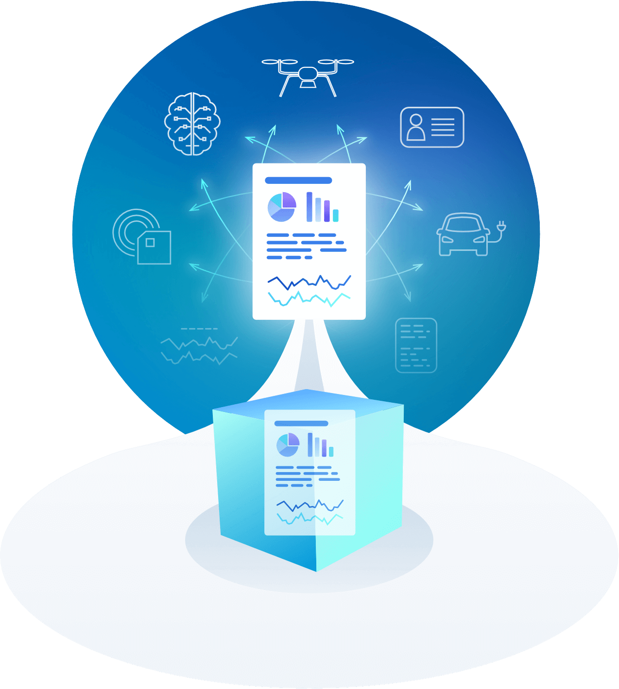
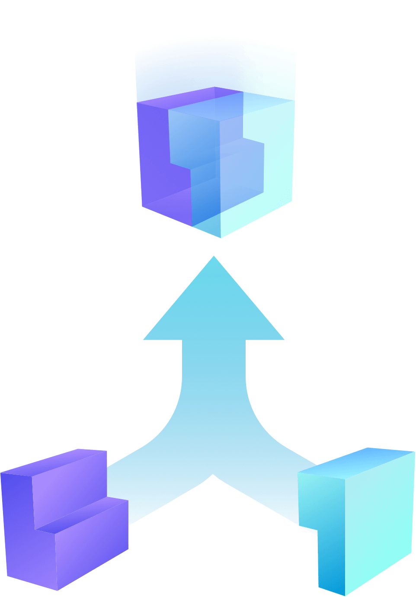

Get involved
Onboard the data marketplace
Joint use case development
Onboard the Data Marketplace
IOTA is now streamlining open access to the demo and will continue signing up organisations to grow the co-creation ecosystem.
Why join the Data Marketplace?
-
Accelerate learning about Distributed Ledger Technologies and IOTA -
Run a free to join and simple trial at your office to explore technically the Data Marketplace potential -

Catalyse the exploration of new business models with your colleagues via structured experimentation -

Initiate open innovation initiatives with the rest of the IOTA ecosystem
Signing up
Please submit the form to flag your interest in onboarding the Data Marketplace. We continue to onboard selectively organisations with the ambitions, capabilities and resources to contribute to our open ecosystem and co-creation initiatives.
Joint Use Case Development
Organisations can team up to develop use cases together. IOTA will support by streamlining access to information and providing guidance in developing on IOTA Tangle.
Partners and initiatives with the following characteristics are particularly attractive to the IOTA Foundation:
- Ambition to explore and develop new business models with the backing of management
- Access to inhouse understanding of DLT / Blockchain and built initial hypotheses of use cases to be explored. Onboarding the Data Marketplace helps to catalyse this process
- Ready to provide human resources, especially in IT capabilities
- Access to tangible assets (facilities, lab, connected hardware…) available for testbed piloting
- Embraces open innovation principles. Openness to publish/showcase publicly
Please send us an email at datamarketplace@iota.org